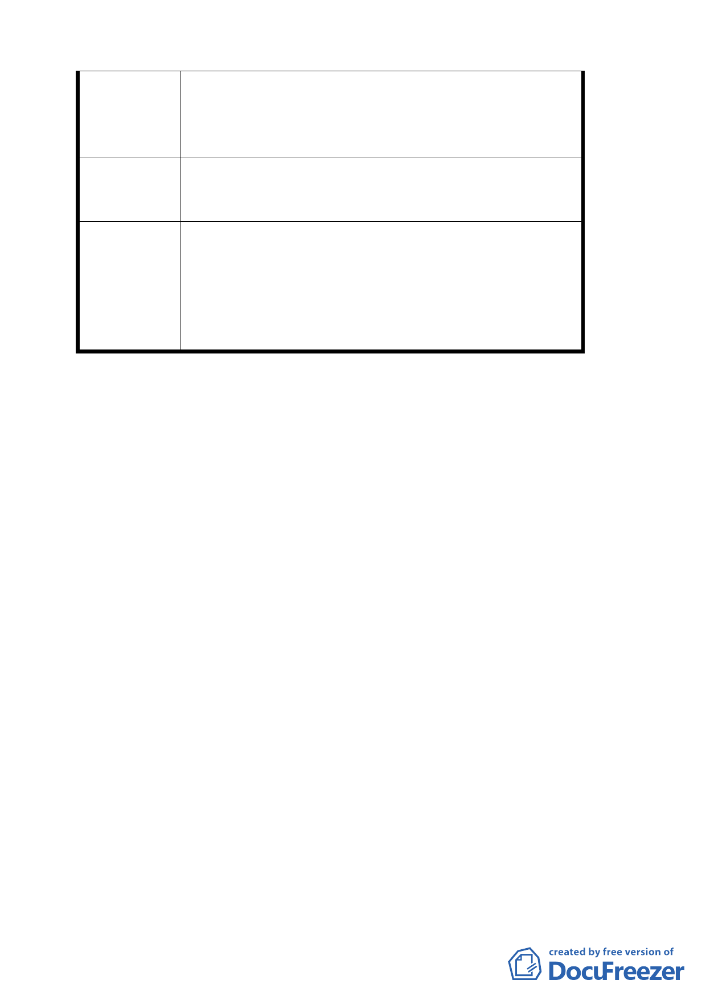

開闢新道路，在新道路未開闢前請 貴單位凍
結此案，不要因此再次造成傷害。
2.以上懇請相關單位作妥規劃，再召全民共同
探討定案。
擬建議處
理意見
請重劃會、市府都市發展局、環保局、建設局、
交通局等說明廢污水排放、環保、水土保持、交
通影響衝擊等內容之因應措施後，提請討論。
考量本計畫案內之開發行為與提案單位尚未履
行其所提環境影響評估分析、水土保持計畫、交
委員會決議
通影響評估衝擊等承諾條件，請提案單位會後與
市府環保局、建設局、交通局、發展局、土地開
發總隊等單位針對該等未解決部分予以釐清，於
下次會議提出說明後，再行通過。
討論事項二
案名：劃定「臺北市大安區龍泉段一小段 231 地號等 4 筆土地為
更新單元」都市更新計畫案
說明：
一、本案係市府以 95 年 11 月 28 日以府都新字第 09530786800 號
函送到會。
二、法令依據： 都市計畫法第 66 條、都市更新條例第 5 條、第 6
條、第 8 條、第 11 條、都市更新條例施行細則第
5 條。
三、申請單位：李榮隆
四、計畫位置：詳計畫圖所示。
五、變更理由及內容：詳計畫書。
決議：本計畫時程獎勵依現行規定辦理，其餘依更新處所提簡報
回應資料修正通過。
附帶決議：另有關未來都市更新審議權責是否授權相關單位部
分，請依本會第 559 次委員會議，討論事項三決議：「請
市府對於都市更新政策面的問題與未來通案處理原則
另做專題報告」，請發展局於下次會議提案討論。
四